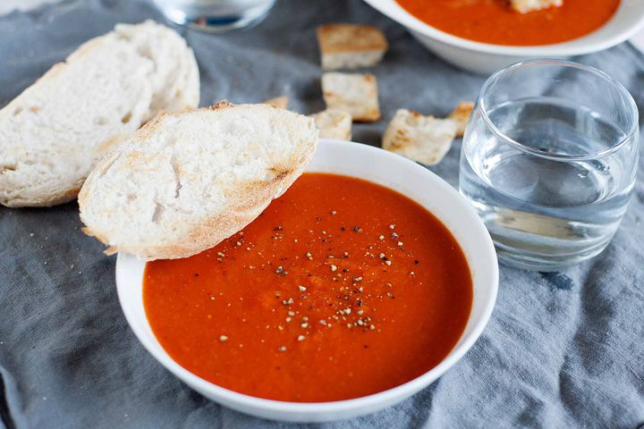

Tomato soup

Description
Tomato soup is a soup with tomatoes as the primary ingredient. It can be served hot or cold, and may be made in a variety of ways.
It may be smooth in texture, and there are also recipes that include chunks of tomato, cream, chicken or vegetable stock, vermicelli, chunks of other vegetables and meatballs.
Ingredients
- 5 tablespoons butter
- 1 large onion, yellow or white, diced
- 4 cloves garlic, minced
- 1 1/2 teaspoons kosher salt
- 1 1/2 teaspoons freshly cracked pepper
- 3 tablespoons all-purpose flour
- 1 (28 ounce) can crushed or diced tomatoes
- 1 (8 ounce) can tomato sauce
- 4 cups (32 ounces) low sodium chicken stock
- 1 tablespoon sugar
Steps
- In a Dutch oven set over medium heat, add the butter. Once it starts to foam, add the onion, garlic, salt, and pepper. Stir until both have softened and are fragrant, about 7 minutes.
- Add flour. Stir to make a paste. Continue stirring until the flour has taken on a light brown color. Stir and scrape with wooden spoon, 5-7 minutes. The onion paste should look golden with a little brown caramelization.
- Add crushed tomatoes, tomato sauce, chicken stock, and sugar. Stir to combine. Cover the pot and bring to a boil over medium high heat, then reduce heat to medium and let simmer uncovered for about 20 minutes.
- Purée the soup with an immersion blender. Alternatively, fill a countertop blender less than halfway with the hot soup. Remove the center lid insert. This allows the hot steam to escape. Cover the hole with a folded kitchen towel and place your hand over the top. Blend. Repeat as necessary until all of the soup has been puréed.